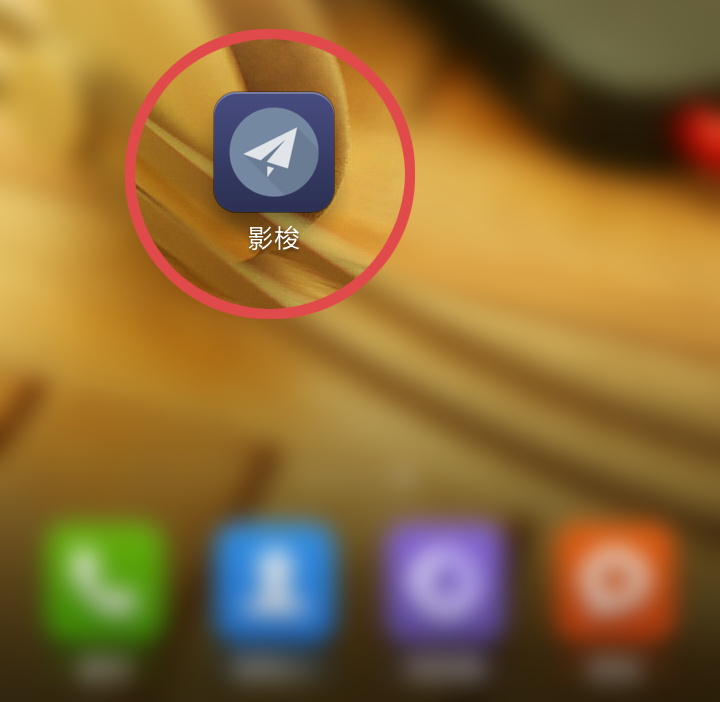
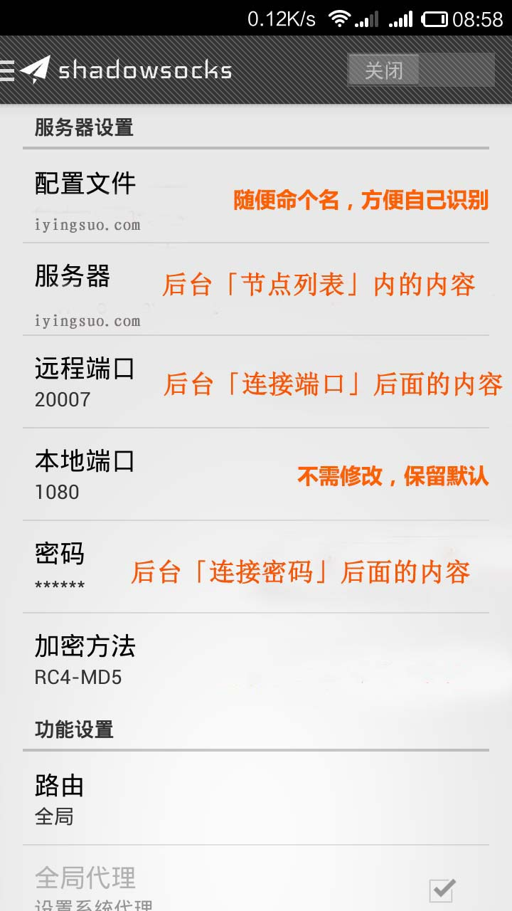
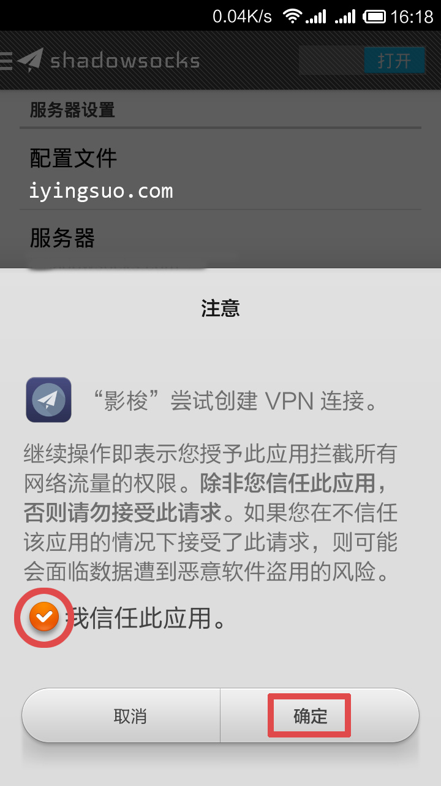
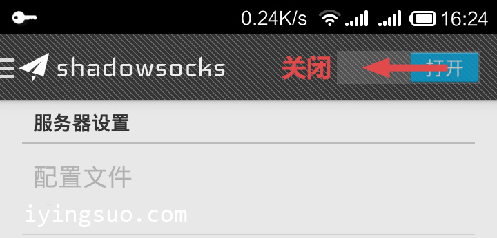

1.下载Android下的Shadowsocks软件
shadowsocksR-点我下载(密码: aih4)
2.下载后安装apk，安装完成后打开App

3.按图示设置服务器地址、端口、密码和加密方式，填写完成后，右上角拖动开始连接

勾选“我信任此软件”，点确定

连接成功后，打开浏览器上网或者各种App即可科学上网
以下方式可以断开

Tips1 无需root即可使用
Tips2 浏览器和App都可以代理，和VPN效果完全一样